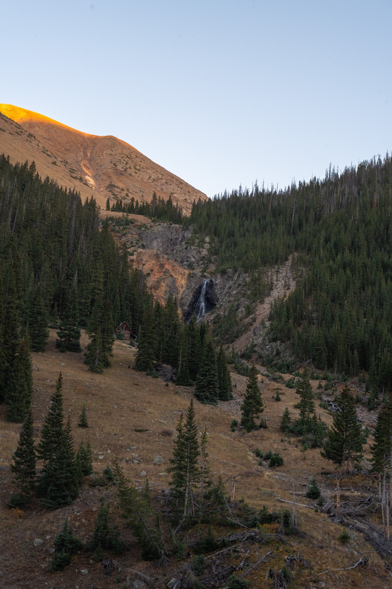

Something for you. Issue#12

Nice to meet you, My name is Matthew and I have something for you.
The something for you newsletter is an email that focuses on 4 things to help you thrive. Each message includes: 1 insight from me, 1 wallpaper, 1 quote, and 1 question for you to consider.
1 Insight From Me
Book: The Nolan Variation by Tom Shone
Nolan doesn’t just tell stories—he sculpts time. His films challenge us to rethink how we experience reality itself. Behind the lens, he’s bending our perception into something poetic and paradoxical. Think less "plot" and more "perspective."
1 Wallpaper
“Twilight in the San Juans”
As the sun slipped behind the ridge, it left one last ember of light on the mountain’s crown—a fleeting farewell. Below, a waterfall whispered through stone, and a long-forgotten cabin stood watch beneath a sky preparing to rest.
I didn’t chase this moment. I arrived, and it waited.
In a world that demands constant motion, let this serve as a reminder: some of the most beautiful things happen just as the day lets go.
1 Quote From Others
"I’ve always been fascinated by the idea of subjectivity—how our perception of time can be bent by memory, emotion, or trauma." — Christopher Nolan
1 Question For You
When has time felt fast, slow, or broken to you?
Want to share this issue of Something for You by Liquid Sun Creative? Copy and paste this link: www.liquidsuncreative.com/blog/s4u12
Until next time,
Matthew Gissentanna